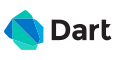
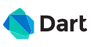

Som et del af mit uddannelsesforløb skal jeg under mit 4. semester på datamatikerstudiet
selv være ansvarlig for min læring i form af et selvstudie. Dette indebære valg af to forskellige emner som
jeg ikke har tidligere erfaringer med og indgåelse af et samarbejde med en virksomhed som står en
problemstilling.
Mit første emne er Frontend Programmering, helt specifik Crossplatform App-Development med
Flutter og Dart som programmeringssprog. Jeg har tidligere erfaringer med android development
på et lav praksis niveau og har siden haft en interesse i at gøre en karriere ud af det. Jeg vil løbende
demontere mine erfaringer med app udvikling på denne blog i form af updates på semester-projektet og
eksperimentere med sideløbende projekter.
Som mit andet emne har jeg valgt Database med et særligt fokus på Blockchain Teknologi. Så
først og fremmest vil jeg fordybe mig i database koncepter og demonstrere brugen af Google Firebase og
MongoDb i semester-projektet.
Men udover det vil jeg dykke ned i det alternative potentiale der findes i Blockchain, ved at undersøge
logikken bag, hvordan eksisterende virksomheder praktisere brugen af det, hvorfor det anses som
revolutionerende teknologi og hvordan det evt. kan inkorporeres i en anderledes use case.
Nedenfor er der linket til et roadmap for hvert emne, men potentielle emner jeg vil dække i fremtidige
blogindlæg.
Før opstart af dette semester indgik mit team og jeg i et samarbejde med virksomheden Little Giants.
Little Giants er et dansk app bureau, baseret i Odense, der specialisere sig indenfor rådgivning, udvikling
og vedligeholdelse af crossplatform applikationer. De har givet os muligheden for at arbejde og udvikle
vores evner på et af deres projekter ved navn RENTO, som vil blive dækket i et andet opslag.
I løbet af dette semester vil jeg selv skulle opstille mine læringsmåls for valgte emner,
som vil forholdsvis være inddelt i viden, færdigheder og kompetencer. I slutningen af semesteret vil de
argere som udgangspunkt for min forståelse af emnerne til eksamen.
Jeg vil løbende opdatere mine læringsmål her.
Frontend programmering
Viden
Den studerende har:
Færdigheder
Den studerende kan:
Kompetencer
Den studerende kan:
Database
Viden
Den studerende kan:
Kompetencer
Den studerende kan:
Kompetencer
Den studerende kan:
Rento er en platform, hvor brugerne kan leje et
værktøj, redskab eller noget helt tredje af andre brugere til overkommelige priser, i kontrast til selv at
købe dem. Som bruger vil du derfor også selv kunne oprette et “produkt” med tilsvarende billeder,
produktinformation og ledige lejeperioder - og derved generer passive indkomst gennem Rentos service (som en
AirBnb for redskaber)
Brugerne vil selv være ansvarlig for udlejningen og tilbagelevering af et produkt, men er sikret gennem
Rentos forsikringsanordning, der vil gøre brugerne trygge i at udleje deres ejendele.
Målgruppen er hovedsageligt privat privatpersoner, men der vil også være muligheder for virksomheder at
registrere sig som bruger og på den måde gøre det endnu nemmere for dem at nå ud til potentialle kunder.
Rentos MVP er en mobil applikation til IOS og Android enheder. Den vil blive udvikle som en crossplatform
app, hvilket betyder at der kun vil være en codebase for hele projektet som fungere på alle
operativsystemer. Backend delen appen vil udviklet med TypeScript. Frontend vil blive udviklet med Google UI
toolkit Flutter, som bliver skrevet i programmeringssproget Dart.


Første reelle dag for opstart af projektet, foregik allerede tilbage i november/december
hvor mit team og jeg besøgte Little Giants for at blive introduceret til projektets omfang. Her gennemgik vi
appens daværende design, funktionelle krav, domæne og estimerede tilsvarende issues som blev opstillet
baseret på kravene.
Nedenstående billede illustrere appens nuværende domæne model

Med en god basal indsigt i projektets omfang, kunne jeg de første dage fokusere på at
blive sat ind i de værktøjer og aktiviteter Little Giants bruger som jeg ikke kendte i forvejen.
Her til at starte med har jeg valgt at fokusere på mit emne Frontend Programmering, fordi det kan nemmest
relatere til udviklingen af selve produktet. Jeg (+ et teammedlem) vil under forløbet være udelukkende
ansvarlige for udvikling af produktets frontend, som vil blive lavet med Flutter og Dart.
Dette er min nuværende forståelse af Flutter og Dart (11/2/2022).
Flutter er Googles take på et UI software development kit (SDK), som der kan bruges til at udvikle
cross platform applikationer. Når man snakker om noget er cross platform vil det sige at der kun
eksistere en codebase, som fungere på flere operativ systemer.
Før i tiden blev der kun udviklet native applikationer til Android og IOS. De skulle hver især
udvikles i forskellige IDE'er, frameworks og kodes med forskellige programmeringssprog. Dette er
enorm tidskrævende og dyrt, fordi du i bund og grund skal lave den samme app to gange hvis din app
skal være på begge platforme.
Med Flutter behøves vi kun at skrive koden en gang - dog er Flutter ikke koden, men frameworket som
forsyner os med de pre-defineret widget, libraries, packages og functioner som gør det muligt at
udvikle en universal codebase.
Måden vi så kan drage nytte af Flutter er med Dart(naturligvis udviklet af Google), som er et
programmeringssproget vi blandt andet bruger til at definere udseendet af en Flutter app og hvordan
brugergrænsefladen skal interagere med backend koden - også kaldt for et klient-optimeret sprog.
 
